写这篇文章主要是为了记录下载Android Studio进行NDK开发的步骤。AS已经用了一段时间了，用AS开发Android确实舒服很多，明显感觉这是一个真正为开发Android而生的IDE，而不是像ADT那样依赖其他IDE。但是以前的Eclipse我也配置了很久，各方面都已经很不错，特别是在ndk开发上很方便，AS明显对ndk的支持还不是很完美。不过JetBrains家的东西总是越用越顺手，相信不久后Google会改进的。也感谢Google把原本收费很贵的IntelliJ免费提供给开发者。
这篇文章的步骤主要来源于youtube上一个韩国开发者做的视频，个人对比了很多其他方案，感觉这种做法最简单，所以选择使用这个方案。首先是下载ndk，不用去单独下载然后配置环境，最好的做法是使用AS自动下载配置。当然首先你得能番羽土啬，我是自己买的vps搭建的ss，在AS中设置代理即可(只要是用AS，就要记得开启代理，否则会很痛苦)。
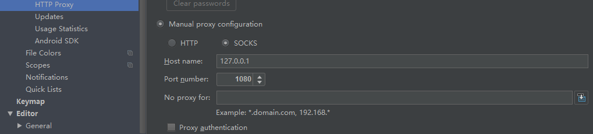
然后在setting中搜索Android SDK，选中Android NDK，apply即可。
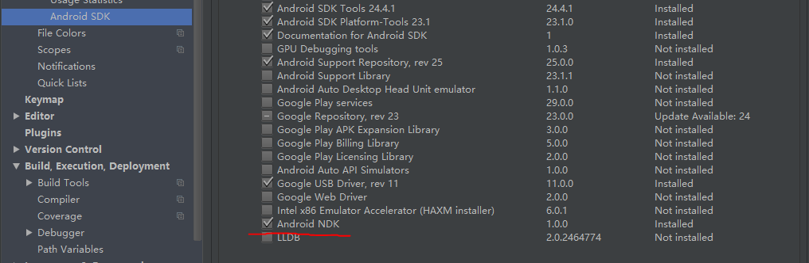
现在就可以开始ndk开发了。首先使用AS新建一个项目，我这里在xml中声明了一个TextView，这个TextView是用来显示从native层传来的字符串。1
2
3
4
5<TextView
android:id="@+id/tv_main_native"
android:layout_width="wrap_content"
android:layout_height="wrap_content"
/>
然后在Activity中使用下面的代码声明我们需要加载的so和native方法。1
2
3
4
5
6
7
8static
{
System.loadLibrary("demo");
}
private TextView tvMainNative;
public native String getStringFromNative();
通常我们的做法是使用命令行敲一堆命令，然后生成jni头文件。这里有更简单的方法。打开File-Settings-Tools-ExternalTools。然后点击绿色的”+”号，新建一个tool，命名为javah，Group填写NDK，然后像下面这样填写。
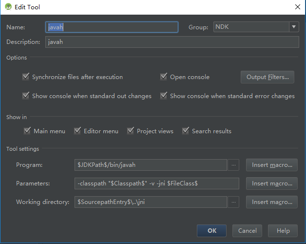
使用同样的方法创建ndk-build和ndk-build clean。
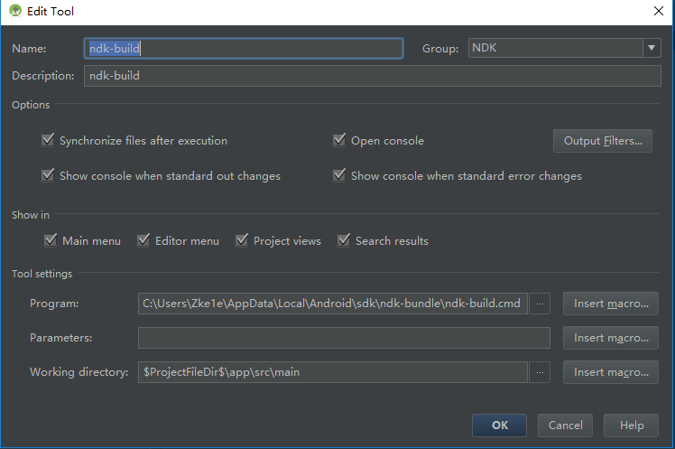
注意这里Program项填写的是ndk-build的主目录。每个人安装AS的地方可能都不一样，我是安装的默认位置，默认在”C:\User\你的用户名\AppData\Local\Android\sdk\ndk-bundle\”下。
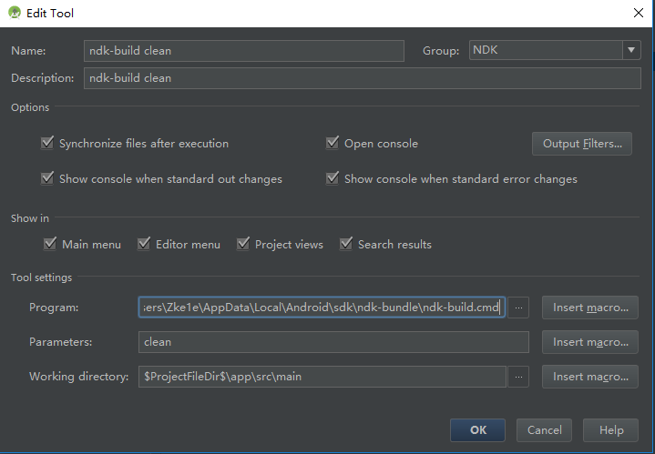
然后右键app-src-main目录，新建一个jni文件夹。
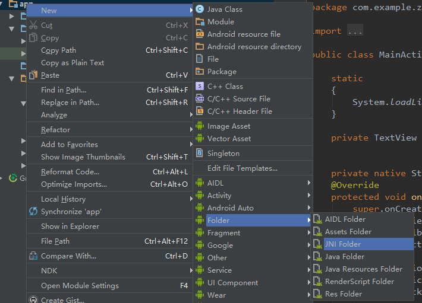
接着配置app的build.gradle，像下面这样填写。1
2
3
4
5
6
7
8
9
10
11
12
13
14
15
16android {
...
defaultConfig {
...
ndk {
moduleName "这里填写so的名字，和java代码中的名字一样"
}
sourceSets.main {
jni.srcDirs = []
jniLibs.srcDir "src/main/libs"
}
...
}
...
}
配置好后，sync gradle，可能会出现下面这样的错误。
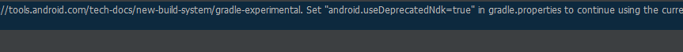
按照提示在grale.properties文件中加入”android.useDeprecatedNdk=true”即可。
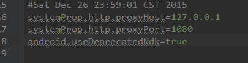
然后Build-Make。
右键声明了native方法的类，选择NDK-javah，生成头文件。
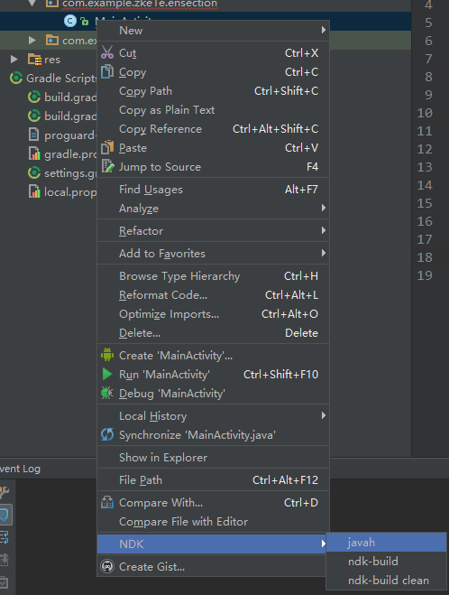
会生成类似下面这样的头文件。1
2
3
4
5
6
7
8
9
10
11
12
13
14
15
16
17
18
19
20
21
22
23
24
25
26
27
28
29
30
31
32
33
34
35
36
37
38
39
40
41
42
43
44
45
46
47
48
49
50
51
52
53
54
55
56
57
58
59
60
61
62
63
64
65
66
67
68
69
70
71
72
73
74
75
76
77/* DO NOT EDIT THIS FILE - it is machine generated */
#include <jni.h>
/* Header for class com_example_zke1e_ensection_MainActivity */
#ifndef _Included_com_example_zke1e_ensection_MainActivity
#define _Included_com_example_zke1e_ensection_MainActivity
#ifdef __cplusplus
extern "C" {
#endif
#undef com_example_zke1e_ensection_MainActivity_BIND_ABOVE_CLIENT
#define com_example_zke1e_ensection_MainActivity_BIND_ABOVE_CLIENT 8L
#undef com_example_zke1e_ensection_MainActivity_BIND_ADJUST_WITH_ACTIVITY
#define com_example_zke1e_ensection_MainActivity_BIND_ADJUST_WITH_ACTIVITY 128L
#undef com_example_zke1e_ensection_MainActivity_BIND_ALLOW_OOM_MANAGEMENT
#define com_example_zke1e_ensection_MainActivity_BIND_ALLOW_OOM_MANAGEMENT 16L
#undef com_example_zke1e_ensection_MainActivity_BIND_AUTO_CREATE
#define com_example_zke1e_ensection_MainActivity_BIND_AUTO_CREATE 1L
#undef com_example_zke1e_ensection_MainActivity_BIND_DEBUG_UNBIND
#define com_example_zke1e_ensection_MainActivity_BIND_DEBUG_UNBIND 2L
#undef com_example_zke1e_ensection_MainActivity_BIND_IMPORTANT
#define com_example_zke1e_ensection_MainActivity_BIND_IMPORTANT 64L
#undef com_example_zke1e_ensection_MainActivity_BIND_NOT_FOREGROUND
#define com_example_zke1e_ensection_MainActivity_BIND_NOT_FOREGROUND 4L
#undef com_example_zke1e_ensection_MainActivity_BIND_WAIVE_PRIORITY
#define com_example_zke1e_ensection_MainActivity_BIND_WAIVE_PRIORITY 32L
#undef com_example_zke1e_ensection_MainActivity_CONTEXT_IGNORE_SECURITY
#define com_example_zke1e_ensection_MainActivity_CONTEXT_IGNORE_SECURITY 2L
#undef com_example_zke1e_ensection_MainActivity_CONTEXT_INCLUDE_CODE
#define com_example_zke1e_ensection_MainActivity_CONTEXT_INCLUDE_CODE 1L
#undef com_example_zke1e_ensection_MainActivity_CONTEXT_RESTRICTED
#define com_example_zke1e_ensection_MainActivity_CONTEXT_RESTRICTED 4L
#undef com_example_zke1e_ensection_MainActivity_MODE_APPEND
#define com_example_zke1e_ensection_MainActivity_MODE_APPEND 32768L
#undef com_example_zke1e_ensection_MainActivity_MODE_ENABLE_WRITE_AHEAD_LOGGING
#define com_example_zke1e_ensection_MainActivity_MODE_ENABLE_WRITE_AHEAD_LOGGING 8L
#undef com_example_zke1e_ensection_MainActivity_MODE_MULTI_PROCESS
#define com_example_zke1e_ensection_MainActivity_MODE_MULTI_PROCESS 4L
#undef com_example_zke1e_ensection_MainActivity_MODE_PRIVATE
#define com_example_zke1e_ensection_MainActivity_MODE_PRIVATE 0L
#undef com_example_zke1e_ensection_MainActivity_MODE_WORLD_READABLE
#define com_example_zke1e_ensection_MainActivity_MODE_WORLD_READABLE 1L
#undef com_example_zke1e_ensection_MainActivity_MODE_WORLD_WRITEABLE
#define com_example_zke1e_ensection_MainActivity_MODE_WORLD_WRITEABLE 2L
#undef com_example_zke1e_ensection_MainActivity_DEFAULT_KEYS_DIALER
#define com_example_zke1e_ensection_MainActivity_DEFAULT_KEYS_DIALER 1L
#undef com_example_zke1e_ensection_MainActivity_DEFAULT_KEYS_DISABLE
#define com_example_zke1e_ensection_MainActivity_DEFAULT_KEYS_DISABLE 0L
#undef com_example_zke1e_ensection_MainActivity_DEFAULT_KEYS_SEARCH_GLOBAL
#define com_example_zke1e_ensection_MainActivity_DEFAULT_KEYS_SEARCH_GLOBAL 4L
#undef com_example_zke1e_ensection_MainActivity_DEFAULT_KEYS_SEARCH_LOCAL
#define com_example_zke1e_ensection_MainActivity_DEFAULT_KEYS_SEARCH_LOCAL 3L
#undef com_example_zke1e_ensection_MainActivity_DEFAULT_KEYS_SHORTCUT
#define com_example_zke1e_ensection_MainActivity_DEFAULT_KEYS_SHORTCUT 2L
#undef com_example_zke1e_ensection_MainActivity_RESULT_CANCELED
#define com_example_zke1e_ensection_MainActivity_RESULT_CANCELED 0L
#undef com_example_zke1e_ensection_MainActivity_RESULT_FIRST_USER
#define com_example_zke1e_ensection_MainActivity_RESULT_FIRST_USER 1L
#undef com_example_zke1e_ensection_MainActivity_RESULT_OK
#define com_example_zke1e_ensection_MainActivity_RESULT_OK -1L
#undef com_example_zke1e_ensection_MainActivity_HONEYCOMB
#define com_example_zke1e_ensection_MainActivity_HONEYCOMB 11L
#undef com_example_zke1e_ensection_MainActivity_MSG_REALLY_STOPPED
#define com_example_zke1e_ensection_MainActivity_MSG_REALLY_STOPPED 1L
#undef com_example_zke1e_ensection_MainActivity_MSG_RESUME_PENDING
#define com_example_zke1e_ensection_MainActivity_MSG_RESUME_PENDING 2L
/*
* Class: com_example_zke1e_ensection_MainActivity
* Method: getStringFromNative
* Signature: ()Ljava/lang/String;
*/
JNIEXPORT jstring JNICALL Java_com_example_zke1e_ensection_MainActivity_getStringFromNative
(JNIEnv *, jobject);
#ifdef __cplusplus
}
#endif
#endif
然后右键jni目录，新建一个C/C++文件，将头文件中的函数声明拷贝过来，并编写如下代码。1
2
3
4
5
6#include "com_example_zke1e_ensection_MainActivity.h"
JNIEXPORT jstring JNICALL Java_com_example_zke1e_ensection_MainActivity_getStringFromNative
(JNIEnv *env, jobject){
return (*env).NewStringUTF("hello JNI");
}
再右键jni目录，新建一个file，命名为Android.mk，如下填写：1
2
3
4
5
6
7LOCAL_PATH := $(call my-dir)
include $(CLEAR_VARS)
LOCAL_MODULE := demo
LOCAL_SRC_FILES := demo.cpp
include $(BUILD_SHARED_LIBRARY)
接着同样新建一个Application.mk(不是必须的)，像这样填写。1
2
3APP_MODULES := demo
APP_ABI := all
最后就可以编译so了。右键jni目录，选择NDK-ndk-build，就会在libs目录下生成不同平台的共享库(这是因为在Application.mk中设置了”APP_ABI := all”，默认只生成arm架构的共享库)。
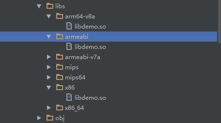
最后运行，可以看到效果。
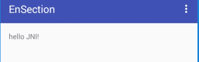